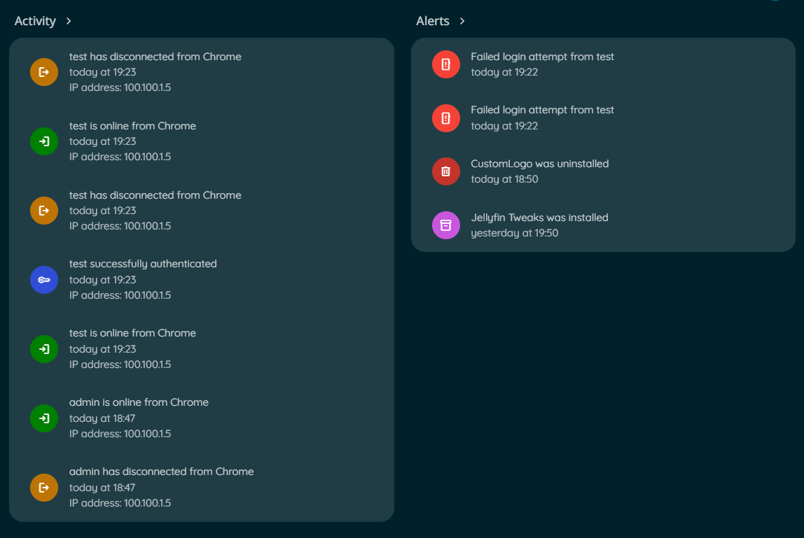
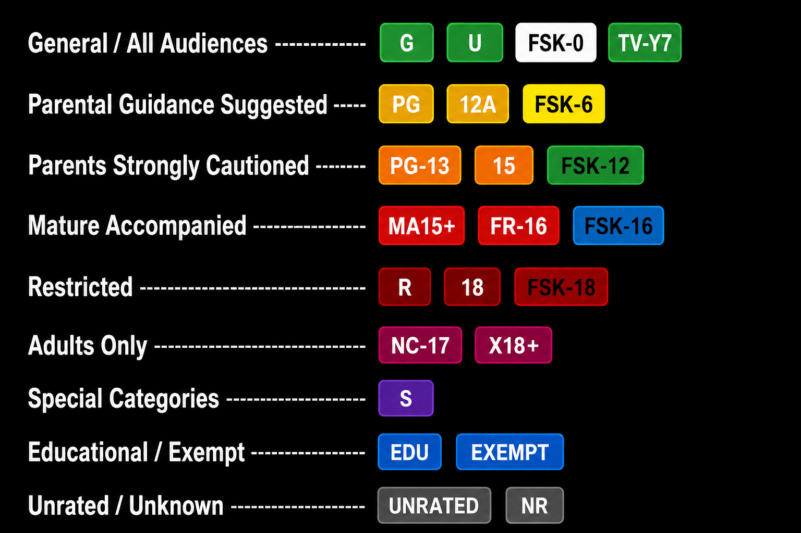
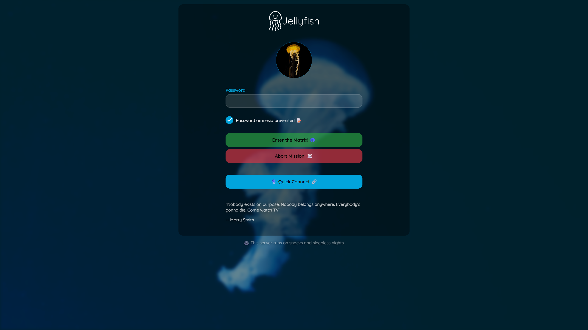
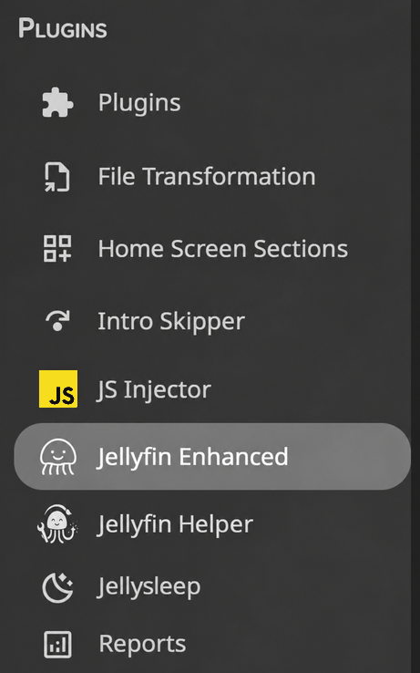
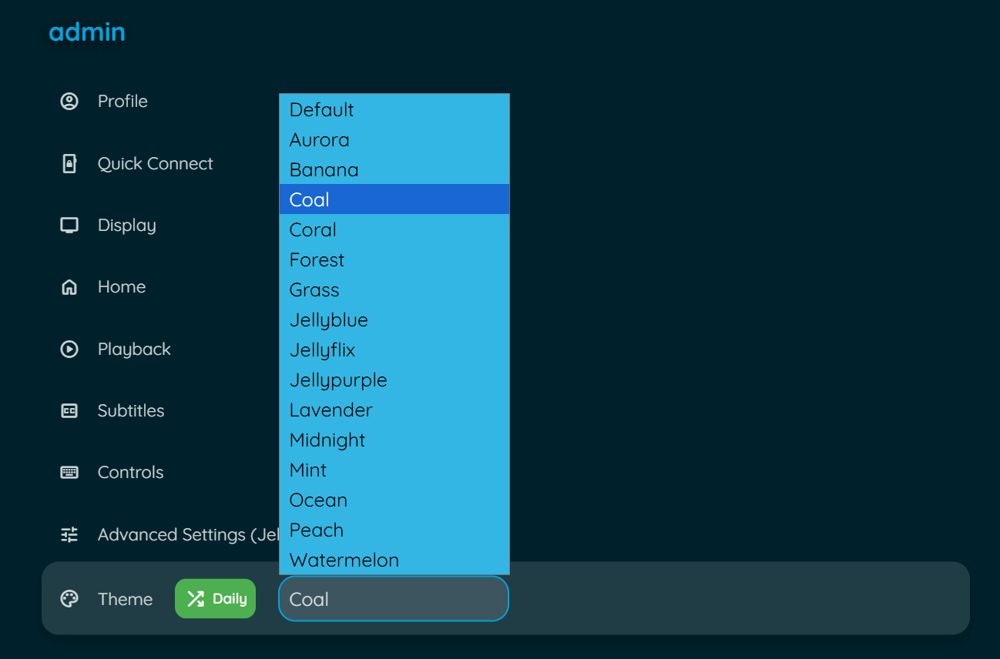
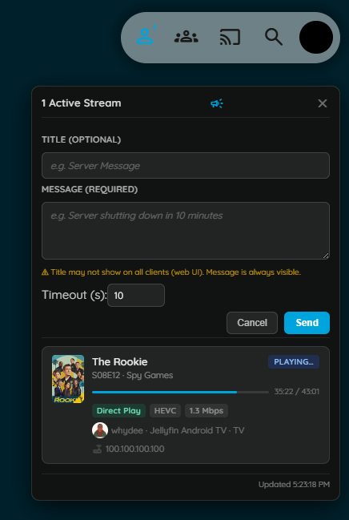
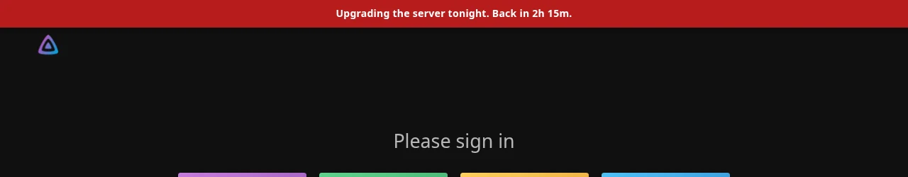

Other Features
Additional features including custom branding, extras, icons, and more.
Table of Contents
- Custom Branding
- Icon Settings
- Extras
- Timeout Settings
- Letterboxd Integration
- MDBList Ratings
- Hidden Content
- Splash Screen
- Internationalization
- Maintenance Mode
Custom Branding
Upload your own logos, banners, and favicon to personalize your Jellyfin instance.
Features
- Custom Jellyfin logo (header)
- Custom splash banners (light/dark themes)
- Custom favicon (browser tab icon)
- Files stored in plugin config folder
- Survives Jellyfin updates
Setup
Prerequisites:
- file-transformation plugin installed
Configuration:
- Go to Dashboard → Plugins → Jellyfin Enhanced
- Navigate to Other Settings tab
- Find Custom Branding section
- Upload your custom images:
- Icon Transparent - Header logo (PNG/SVG recommended)
- Banner Light - Dark theme splash image
- Banner Dark - Light theme splash image
- Favicon - Browser tab icon
- Click Save
- Force refresh browser (Ctrl+F5)
Image Requirements
- Formats: PNG, SVG recommended
- Transparent backgrounds for logos
- Appropriate dimensions for each type
- File size: Keep reasonable for performance
Storage Location
Files stored in:
This location survives Jellyfin server and web updates.
Icon Settings
Configure icon display throughout the plugin interface.
Use Icons
Enable or disable icons in toasts, settings panel, and other UI elements.
Enable:
- Go to Dashboard → Plugins → Jellyfin Enhanced
- Navigate to Other Settings tab
- Check "Use Icons"
- Click Save
Icon Style
Choose between different icon sets.
Available Styles:
- Emoji - Unicode emoji characters (default)
- Lucide Icons - Modern, clean icon set
- Material UI Icons - Google Material Design icons
Configuration:
- Select icon style from dropdown
- Click Save
- Refresh browser to see changes
Considerations:
- Emoji - Universal, no loading required
- Lucide - Clean, modern aesthetic
- Material UI - Familiar Google design
Extras
Personal scripts from the developer's collection.
Colored Activity Icons
Replace default activity icons with Material Design icons with custom colors.

Features:
- Custom colors for each activity type
- Material Design icon set
- Better visual distinction
Enable:
- Go to Dashboard → Plugins → Jellyfin Enhanced
- Navigate to Other Settings tab
- Check "Enable Colored Activity Icons"
- Click Save
Colored Ratings
Color-coded backgrounds for ratings on detail pages.

Features:
- Different colors per rating type
- Value-based color gradients
- Supports TMDB, IMDb, Rotten Tomatoes
Enable:
- Navigate to Other Settings tab
- Check "Enable Colored Ratings"
- Click Save
Login Image Display
Show user profile images on manual login page.

Features:
- Display user avatars
- Cleaner login interface
- Automatic fallback to text
Enable:
- Navigate to Other Settings tab
- Check "Enable Login Image"
- Click Save
Plugin Icons
Replace default plugin icons with Material Design icons.

Features:
- Custom icons for popular plugins
- Add custom config page links
- Improved dashboard aesthetics
Enable:
- Navigate to Other Settings tab
- Check "Enable Plugin Icons"
- Click Save
Custom Plugin Links: Add custom links to plugin config pages.
Format:
Example:
Jellyfin Enhanced|/web/configurationpage?name=JellyfinEnhanced
Custom Plugin|https://example.com/config
Theme Selector
Choose from multiple Jellyfin theme color variants.

Features:
- Multiple color palettes (Aurora, Jellyblue, Ocean, etc.)
- Randomize theme daily option
- Quick theme switching
Enable:
- Navigate to Other Settings tab
- Check "Enable Theme Selector"
- Click Save
Usage:
- Open Enhanced panel
- Go to Settings tab
- Find Theme Selector section
- Select theme from dropdown
- Optional: Enable "Randomize Daily"
Available Themes:
- Aurora
- Jellyblue
- Ocean
- Sunset
- Forest
- And more...
Active Streams Widget

Admin Configuration
- Go to Dashboard → Plugins → Jellyfin Enhanced
- Navigate to the Other Settings tab
- Enable "Active Streams Widget"
- Optional: Enable "Show to all users"
- Click Save
Settings
| Setting | Default | Description |
|---|---|---|
| Active Streams Widget | Off | Adds the stream counter icon to the Jellyfin header |
| Show to all users | Off | When enabled, non-admin users also see the widget (read-only, no broadcast, no IP addresses) |
Broadcast Form Fields
Admins can send a message to all active sessions from the panel header (megaphone icon):
| Field | Required | Description |
|---|---|---|
| Title | No | Optional heading; may not display on web UI clients |
| Message | Yes | The message body; always visible on all clients |
| Timeout (s) | Yes | Seconds before the notification auto-dismisses (default: 10) |
Warning
The Title field may not render on the Jellyfin web client. Always put the important information in the Message field.
Timeout Settings
Configure durations for Enhanced panel UI elements.
Help Panel Auto-Close
Control how long the help panel stays open before automatically closing.
Configure:
- Go to Dashboard → Plugins → Jellyfin Enhanced
- Navigate to Other Settings tab
- Find Timeout Settings section
- Set Help Panel Autoclose Delay (milliseconds)
- Click Save
Default: 8000ms (8 seconds) Range: 0-30000ms (0 = no auto-close)
Use Cases:
- Longer delay for first-time users
- Shorter delay for experienced users
- Disable auto-close (0) for accessibility
Toast Notification Duration
Control how long toast notifications are displayed.
Configure:
- In Timeout Settings section
- Set Toast Duration (milliseconds)
- Click Save
Default: 3000ms (3 seconds) Range: 1000-10000ms
Affects:
- Bookmark saved notifications
- Success/error messages
- State change confirmations
Letterboxd Integration
Add Letterboxd external links to movie item detail pages.
Setup
- Go to Dashboard → Plugins → Jellyfin Enhanced
- Navigate to Other Settings tab
- Check "Enable Letterboxd Links"
- Optional: Check "Show Letterboxd Link as Text" for text instead of icon
- Click Save
Usage
On Movie Detail Pages:
- Open any movie
- Look for Letterboxd link in external links section
- Click to open movie on Letterboxd
Features:
- Automatic TMDB ID to Letterboxd mapping
- Direct links to movie pages
- Icon or text display option
MDBList Ratings
Shows TMDB, Rotten Tomatoes, IMDb, Trakt, Metacritic, Letterboxd and other ratings on item-details pages, sourced from MDBList. Can also fill in Jellyfin's own Community/Critic Rating fields when they're empty - useful since Jellyfin's built-in providers (TMDB, OMDb) don't always carry a Rotten Tomatoes score.
Based on xroguel1ke's original script.
Setup
- Get a free API key from mdblist.com/preferences (no payment required; free tier is 1000 requests/day)
- Go to Dashboard → Plugins → Jellyfin Enhanced
- Navigate to the Other Settings tab
- Check "Enable MDBList Ratings"
- Paste your API key, click "Check Status" to verify it (works before saving)
- Click Save
The API key is used server-side only - the plugin proxies every request, so the key never reaches a browser.
The ratings row
With "Show Ratings Row on Item Details" on (the default), a row of rating badges appears on movie and series detail pages, right in the top metadata row next to the official rating/runtime - same placement as the original script. Each badge links out to that rating's own page (IMDb, Rotten Tomatoes, Trakt, etc.) when MDBList has enough information to build one; a few sources (like MDBList's own aggregate, "Master") have nowhere to link to and just render as plain text.
Which sources show and in what order is configurable, with logos matching each source - see Other Settings - MDBList Ratings. There's no color-coding (the original script's red/yellow/green bands were dropped as unnecessary complexity) - just an optional "Show % Symbol" to append % after each number.
The Rotten Tomatoes Critic badge is the one exception: instead of a static logo, it switches between the red tomato and green splat depending on MDBList's own Fresh/Rotten status for that title - the same glyphs Jellyfin's own web client uses elsewhere.
Filling in Jellyfin's own ratings
This is a separate, optional step from the display row above, and it's deliberately split into two independent scheduled tasks under Jellyfin's own Dashboard → Scheduled Tasks - one that talks to MDBList, one that doesn't:
- Fetch Ratings from MDBList (enable via "Fetch Ratings from MDBList") - the only one of the two that makes MDBList API calls. Looks up any movie/series whose cached MDBList data is missing or stale and saves it; doesn't touch Jellyfin's own rating fields at all. Stops for the day once the account's live remaining quota drops to the Fetch Task Reserve, so it doesn't crowd out people browsing the library. Because already-fresh titles are skipped on a re-run (see caching below), this is safe to schedule frequently - even daily - without wasting quota once the library's cache is warm.
- Sync Ratings from MDBList to Jellyfin (enable via "Sync Ratings from MDBList to Jellyfin") - reads whatever the Fetch task has already cached and writes Community (TMDB) / Critic (Rotten Tomatoes) Ratings into Jellyfin's own fields. Makes no MDBList API calls of its own, so there's no quota concern and no reason not to run it as often as you like - it's cheap, local computation only. A title the Fetch task hasn't gotten to yet is simply skipped, not treated as an error.
Both tasks only ever fill an empty Community/Critic Rating by default - an item that already has a rating (from TMDB, OMDb, or a manual edit) is left alone. Turn on "Overwrite Existing Ratings" to instead have every item's rating always match MDBList's current cached value; this is also the only way ratings actually stay current over time, since with it off, an item is never revisited once its rating is set once.
Batching
MDBList's API has two shapes: one call returns every rating source for one title (what the ratings row uses when you view an item, and what the Fetch task uses too), or one call returns every rating source for many titles of the same media type at once (POST /{provider}/{type}/). The Fetch task uses the batch shape - instead of one API call per item, it requests up to 150 ids at a time, getting every source, vote count, and per-source link back in that single call.
150 was found empirically, not from MDBList's docs (this endpoint doesn't publish a per-call limit): live testing found 177 ids in one call matched cleanly, but 244 ids came back with exactly 200 matched and 44 "unmatched" - a suspiciously round number that turned out to be a silent response cap rather than 44 titles genuinely missing data (a smaller follow-up call for those same 44 matched all of them). 150 keeps a safety margin under that observed ~200-item ceiling.
Because the Fetch task's batch call fetches every source in one shot, the ratings-row display cache is always fully warmed alongside the Jellyfin-field data - no separate warming step, and nothing is ever left incomplete for a later page view to backfill.
How refreshing works
Two different caches are involved, refreshed independently:
- MDBList lookups (the raw data fetched from MDBList's API, stored in
mdblist-ratings.json) are cached per-title for 7 days once found, or 3 days if MDBList has no match, or 1 hour if the request itself failed (network error, rate limit). A lookup happens when something asks for that title again - viewing its detail page (fetches live if nothing's cached yet), or the Fetch task considering it as stale. - Jellyfin's own Community/Critic Rating fields are written by the Sync task from whatever's currently cached. With Overwrite off, a field is written once and never revisited; with Overwrite on, it's re-set on every Sync task run to whatever the (possibly still-cached) MDBList lookup currently says - so it follows the 7-day MDBList cache, not the Sync task's own run frequency.
Account quota
The plugin reads your account's actual remaining quota live from MDBList (GET /user) rather than guessing - this call doesn't itself count against the limit, so it's checked freely (e.g. every time the config page loads, or every few minutes internally). There's nothing to manually configure for the daily limit itself; it's always read from your real account, so it stays correct if you upgrade your MDBList plan.
Hidden Content
Hide specific items from your Jellyfin library without deleting them.
Features
- Hide movies, shows, or episodes
- Hidden items don't appear in library
- Easily unhide items later
- Per-user hidden content
- Manage via Enhanced panel or dedicated page
Setup
- Go to Dashboard → Plugins → Jellyfin Enhanced
- Navigate to Enhanced Settings tab
- Find Hidden Content section
- Check "Enable Hidden Content"
-
Optional: Check "Use Plugin Pages for Hidden Content Library"
- Adds a sidebar link to dedicated Hidden Content page (Jellyfin 12: user profile menu instead)
- Requires Plugin Pages plugin
- Restart Jellyfin after enabling for first time 6. Click Save
Usage
Hide Item:
- Open item detail page
- Click hide button (if available)
- Item removed from library view
Manage Hidden Items:
Via Enhanced Panel:
- Open Enhanced panel (press
?) - Go to Hidden Content section
- View all hidden items
- Click to unhide
Via Dedicated Page (if enabled): 1. Click "Hidden Content" in sidebar (Jellyfin 12: user profile menu instead) 2. View all hidden items with thumbnails 3. Search and filter hidden items 4. Click to unhide
Note: Hidden items are per-user. Admins can optionally view and manage other users' hidden lists. See Hidden Content → Admin Controls in the plugin settings.
Splash Screen
Custom splash screen that appears while Jellyfin is loading.
Setup
- Go to Dashboard → Plugins → Jellyfin Enhanced
- Navigate to Other Settings tab
- Check "Enable Custom Splash Screen"
-
Enter Splash Screen Image URL
- Use full URL or relative path
- Default:
/web/assets/img/banner-light.png5. Click Save
Image Requirements
- Format: PNG, JPG, SVG
- Size: Appropriate for full-screen display
- Location: Accessible from web root
- Responsive: Should work on various screen sizes
Custom Image
Upload Custom Image:
- Place image in Jellyfin web directory
- Note the path (e.g.,
/web/custom/splash.png) - Enter path in plugin settings
- Save and refresh
Internationalization
Multi-language support with community translations.
Supported Languages

How It Works
- Automatically detects Jellyfin user profile language
- Fetches latest translations from GitHub on first load
- Caches translations for 24 hours
- Falls back to bundled translations if offline
- Clears outdated caches on plugin update
Default Language Override
Set a default language for all users.
Configuration:
- Go to Dashboard → Plugins → Jellyfin Enhanced
- Find Default UI Language setting
- Select language from dropdown
- Leave empty for system default
- Click Save
Contributing Translations
See the Contributing Translations section for details.
Translation Updates:
- Fetched from GitHub on first load
- Available immediately after merge
- No plugin update needed
- Cached per plugin version
Maintenance Mode

Puts up a login-page banner and optionally locks non-admin users out while you work on the server, from Dashboard → Plugins → Jellyfin Enhanced → Admin tab.
This changes account/network access, read before enabling
Enabling applies the selected action to affected users immediately on save - this is not just a cosmetic banner unless you leave both action checkboxes unchecked. Administrators are never affected, and disabling the toggle restores every affected user automatically.
What it does
- Shows a message banner on the Jellyfin login page and home page for everyone (admins included).
- Optionally sends a native Jellyfin popup notification to anyone currently watching, reaching every client type (web, mobile, TV apps).
- Optionally applies one or both actions to the affected users: - Disable user accounts - they cannot log in at all until maintenance ends - Disable remote connections - blocks access from outside the local network; LAN access still works
- Scopes the action to all non-admin users, or to a specific hand-picked selection.
- Optionally ends by itself after a set Duration, with a live countdown in the banner.
- Optionally reminds affected users on every playback start (any client) with the time remaining.
- Optionally runs on a daily schedule (e.g. 00:00-08:00 while nightly scans run) with its own message and action.
Setup
- Go to Dashboard → Plugins → Jellyfin Enhanced
- Navigate to the Admin tab
- Write the Login Page Banner Message (plain text, shown as a red banner)
- Optionally write an Active Session Notification (sent as a popup to anyone currently watching)
- Choose an Action: disable accounts, disable remote connections, both, or neither (banner-only)
- Choose Affected Users: all non-admin users, or select specific users from the list
- Optionally set a Duration in minutes (0 = until you turn it off)
- Check "Enable Maintenance Mode"
- Click Save
Turning the toggle back off restores every affected user's account/remote access automatically - there's nothing to manually undo.
Countdown and message tokens
Both message fields understand two tokens:
{countdown}- time remaining, e.g.1h 05mor12m{ends_at}- the end time (local time of the viewer for the banner, server time in popups)
When maintenance has a known end (a duration or a scheduled window) and a message contains no {countdown} token, the time remaining is appended automatically (in English, as Time remaining: 12m.; on a non-English server put {countdown} in the message instead). The banner refreshes every 15 seconds and removes itself when maintenance ends. With a duration set, the Enable Maintenance Mode toggle also switches itself off when the time is up. Re-saving the settings page with the same duration keeps the running clock; changing the number restarts it.
Reminders on playback start
Check Remind on playback start to re-send the Active Session Notification (with the time remaining) to an affected non-admin user each time they start playing something, on any client type. Reminders are sent at most once every 5 minutes per session. This is meant for the "warn, don't lock out" setups (action = none or remote only) - a user whose account is disabled never gets as far as playback.
Scheduled window
Check Enable daily maintenance window and set a Start time and End time (server local time, shown under the fields; Docker containers usually run on UTC unless TZ is set. An end earlier than the start crosses midnight). Every day, inside that window, maintenance mode turns itself on with the Scheduled Banner Message, Scheduled Session Notification and Scheduled Action, and turns itself off again at the end. The Affected Users selection is shared with the manual settings. Sessions active when the window opens get the notification as a popup.
- The manual Enable Maintenance Mode toggle takes precedence: while it is on, the schedule does nothing, and saving unrelated settings never ends a running scheduled window.
- To end a scheduled window early, untick Enable daily maintenance window and save; the window ends and users are restored right away.
- Users already browsing see the banner on their next page load; the popup notification reaches them immediately.
Cache Management
Clear various caches to force refresh of data.
Clear Local Storage
Force all clients to clear their localStorage.
Use Case:
- Reset all client-side settings
- Fix corrupted data
- Force fresh start
How:
- Go to Dashboard → Plugins → Jellyfin Enhanced
- Find Clear Local Storage button
- Click to set timestamp
- All clients clear storage on next load
Clear Translation Cache
Force all clients to re-fetch translations.
Use Case:
- Update to latest translations
- Fix translation issues
- Force language refresh
How:
- Find Clear Translation Cache button
- Click to set timestamp
- Clients re-fetch on next load
Clear Tags Cache
Force all clients to clear tag caches.
Use Case:
- Update quality/genre/language/rating tags
- Fix cached tag data
- Force tag refresh
How:
- Go to Enhanced Settings tab
- Find Clear All Client Caches button
- Click to clear
- Clients re-fetch tag data on next load
Note: May cause slowness on first load after clearing.
Support
If you encounter issues: